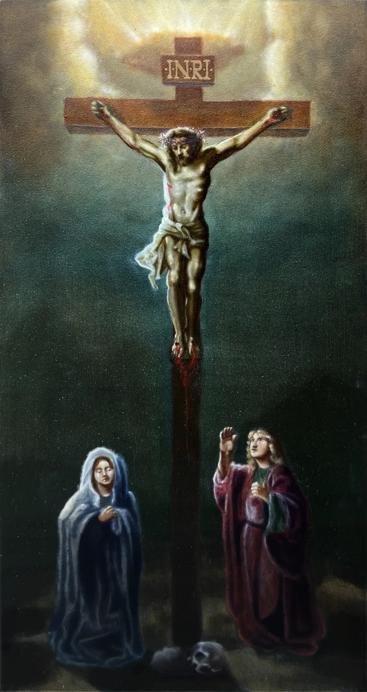

About
This painting depicts the Crucifixion in the traditional format, with the Virgin Mary and the Apostle John flanking the base of the cross. The figure of Christ was built through careful attention to anatomical tension in the arms and torso, weighted against the slack of the hips and legs, to convey both physical strain and stillness. A limited, cool palette in the surrounding darkness isolates the figure through value contrast, while a single warm light source breaks through the sky above, framing the INRI inscription and drawing the eye upward along the vertical axis of the cross. The skull at the base, a traditional reference to Golgotha, anchors the composition in its narrative setting.